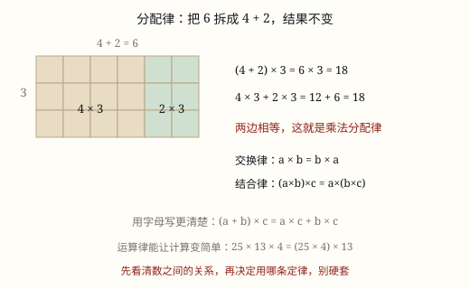

加法、乘法的运算律与减法、除法的性质
加法交换律 a+b=b+a、结合律 (a+b)+c=a+(b+c)：加数怎么换位置、怎么分组，和都不变，是简便计算的法宝。
| 所属主题 | 数的运算 |
|---|---|
| 所属模块 | 数与代数 |
| 课标学段 | 第二学段（3~4年级） |
| 前置知识 | 乘法的初步认识与 1~9 的乘法口诀、混合运算的顺序 |
| 核心素养 | 运算能力符号意识推理意识 |
教材定位
人民教育出版社《2024年版》
对应四下第 2 单元「混合运算和运算律」：加法交换律与结合律、减法的性质。；对应四下第 2 单元「混合运算和运算律」：乘法交换律、结合律与分配律。；对应四下第 2 单元「混合运算和运算律」：减法的性质与除法的性质。
课标要求
| 数与代数·数与运算 | 探索并理解运算律（加法交换律和结合律、乘法交换律和结合律、乘法对加法的分配律），能用字母表示运算律。 印刷第 21 页 行为动词：理解 |
|---|---|
| 数与代数·数与运算 | 能进行简单的小数、分数四则运算和混合运算，感悟运算的一致性，发展运算能力和推理意识。 印刷第 24 页 行为动词：掌握 |
说明
加法交换律：两个数相加，交换加数的位置，和不变。用字母写是 a + b = b + a。比如 38 + 62 和 62 + 38 都等于 100——你先给我 38 颗糖再给 62 颗，和我先给 62 再给 38，你手里的糖一样多。
加法结合律：三个数相加，先把前两个相加，或者先把后两个相加，和不变。用字母写是 (a + b) + c = a + (b + c)。比如 (28 + 72) + 45 和 28 + (72 + 45) 都等于 145——先数哪两堆，总数都一样。
这两条运算律的价值在简便计算：看到能凑成整十、整百的数，就交换位置或添上括号，把它们先加起来。比如 175 + 68 + 32，发现 68 + 32 = 100，于是 175 + (68 + 32) = 175 + 100 = 275，口算就出来了。
（乘法运算律）
乘法交换律：两个数相乘，交换因数的位置，积不变，a × b = b × a。比如 25 × 4 和 4 × 25 都等于 100。
乘法结合律：三个数相乘，先把前两个相乘，或者先把后两个相乘，积不变，(a × b) × c = a × (b × c)。比如 25 × 32 × 125 中，4 × 25 = 100、8 × 125 = 1000，把 32 拆成 4 × 8，再各自结合，积一眼可算。
乘法分配律：两个数的和乘一个数，等于把这两个数分别乘这个数，再把积相加，(a + b) × c = a × c + b × c。比如 (25 + 23) × 4 = 25 × 4 + 23 × 4 = 100 + 92 = 192。它也反过来用：35 × 36 + 35 × 64 = 35 × (36 + 64) = 3500。
（减法的性质和除法的性质）
先看 100-26-14。按顺序算：100-26=74，74-14=60。也可以先算「一共花掉多少」：26+14=40，100-40=60。两条路答案一样，这就是减法的性质：a-b-c=a-(b+c)。连着减两次，等于一次减掉它们的和。
除法有同款：720 ÷ 8 ÷ 9。按顺序 720 ÷ 8=90，90 ÷ 9=10；也可以先算「一共分成多少份」：8 × 9=72，720 ÷ 72=10。这就是除法的性质：a ÷ b ÷ c=a ÷ (b × c)，其中 b、c 都不为 0。
括号里一个是「加」，一个是「乘」，这不是巧合：减法是加法的逆，花掉的钱要合成总支出；除法是乘法的逆，分的份数要乘成总份数。
反过来也成立，用来去括号：a-(b+c)=a-b-c，a ÷ (b × c)=a ÷ b ÷ c。括号前面是减号或除号时，去掉括号里面的符号要跟着变。
只有「连着减」和「连着除」才能这样合。100-26+14 不能写成 100-(26+14)，720 ÷ 8 × 9 也不能写成 720 ÷ (8 × 9)——中间夹了一个加号或乘号，方向就变了。
使用场景
统计成绩：把小组几个同学的跳绳个数连加时，先找能凑整的组合，比如 175 + 68 + 32 里 68 和 32 先加，算得又快又准。
春游路程：全天的行程分成三段，128 + 54 + 72 千米，把 128 和 72 先加凑成 200，再走一段路加一段，心里随时有数。
存零花钱：把三个月存进储蓄罐的钱加总，168 + 32 + 125 中 168 和 32 先加成 200，总数一目了然。
买东西付钱：书包 47 元、笔袋 18 元、练习本 53 元，47 和 53 先加成 100，总价马上算出来。
（乘法运算律）
春游分组结算：4 个班春游，每班男生 25 人、女生 23 人，总人数是 (25 + 23) × 4，也可以分开算 25 × 4 + 23 × 4，两种算法结果一样。
买套餐：一份早餐 1 杯豆浆 3 元加 1 个包子 2 元，全班 12 份，(3 + 2) × 12 = 3 × 12 + 2 × 12，分开结账也一样是 60 元。
工程备料：给教室做窗帘要用 125 × 16 米布，把 16 拆成 8 × 2，125 × 8 = 1000，口算就能备料。
快递计重：分拣线昨天 36 箱大件加 64 箱小件，每箱都按 35 千克计，总重 35 × 36 + 35 × 64 = 35 × 100 = 3500 千克，逆用分配律一步到位。
（减法的性质和除法的性质）
记账：一天里花了两笔钱，先算合计再一次减掉，比一次一次减快也少错。
分层分发：书先分给年级、再分给班，份数相乘，可以一次除。
运输：货物先平分成几车、每车再跑几趟，趟数乘起来就是总份数。
截料：一根钢管分两次截去，合起来一次减，剩下的长度一眼看得出。
注意点
交换律、结合律只属于加法（和乘法）。减法和除法没有这两条律：68 - 32 = 36，但 32 - 68 根本不够减，千万别把交换律搬过去。
结合律添括号要看清能不能凑整。27 + 54 + 46 把 54 和 46 结合很好；但硬把 27 和 54 结合，(27 + 54) + 46 没有变难也没有变错，只是不简便。简便是一种选择，不是义务。
凑整前先看清数的特点：末位凑十（如 68 和 32）、前两位凑九十几（如 175 和 125），这些「凑整信号」要一眼认出来。
交换的是加数的位置，不是数。175 + 68 + 32 写成 68 + 32 + 175 时，三个数一个没丢、一个没变，只是排队方式变了。
（乘法运算律）
分配律最容易漏乘：(a + b) × c 展开后，a 和 b 都要乘 c。写成 a × c + b 就错了——括号里的每一项都逃不掉乘 c。
结合律是「乘」，分配律是「和乘一个数」。(a × b) × c 里是三个数连乘用结合律；(a + b) × c 里有加号才轮到分配律出场。看到括号先看里面是加号还是乘号。
拆数要为凑整服务：见到 25 想 4，见到 125 想 8，见到 5 想 2，因为 25 × 4 = 100、125 × 8 = 1000。拆错方向反而更难算。
逆用分配律要确认「同一个因数」：35 × 36 + 35 × 64 里两处都有 35，才能提出来变成 35 × (36 + 64)；如果是 35 × 36 + 34 × 64，就不能这样提。
（减法的性质和除法的性质）
只对连减、连除成立。中间夹着加号或乘号，就不能往括号里合。
进括号时符号要变：减号后面添括号，里面用加号；除号后面添括号，里面用乘号。
除数不能为 0。a ÷ b ÷ c 里的 b、c 都必须不为 0。
凑整要看得出和或积。128+72=200、4 × 5=20 这类才是简算的好搭档，凑不出整十整百就别硬凑。
写脱式一步一行，把「合起来」的那一步单独写出来，方便回头检查。

图 1：把 6 拆成 4+2，分开乘再相加，结果一样
为什么是这样
算理推导
为什么交换律成立：加法就是「合并」——把两堆小棒合成一堆。先数左堆再添上右堆，和先数右堆再添上左堆，最后手里都是同样的一堆。总数只跟「堆里有几根」有关，跟先数哪堆无关，所以 a + b = b + a。
为什么结合律成立：三个数相加就是三堆合成一堆。「先合并前两堆，再添第三堆」和「先合并后两堆，再添第一堆」，堆的顺序不同，但小棒一根没多也没少，总数当然不变，所以 (a + b) + c = a + (b + c)。
它们为什么能帮我们算得快：175 + 68 + 32 按从左往右算是 243 + 32 = 275，要进位两次；而 68 和 32 末位凑十，正好凑成 100，175 + 100 一眼就是 275。运算律保证「换个算法答案不变」，我们就可以放心挑最好算的那条路。
（乘法运算律）
分配律为什么成立：(25 + 23) × 4 说的是「4 个 25 加 4 个 23 的和」，也就是 4 个 25 再加 4 个 23——25 × 4 + 23 × 4。买 4 套「上衣加裤子」，等于买 4 件上衣加 4 条裤子，钱一分不多一分不少，所以 (a + b) × c = a × c + b × c。
结合律为什么成立：2 × 3 × 4 可以想成「4 个 (3 个 2)」，也可以想成「12 个 2」——因为 3 × 4 就是 12。无论先把哪两个因数乘起来，最后数出来的总份数一样，积不变。
它们怎么用在简算上：25 × 44，44 拆成 40 + 4 用分配律：25 × 40 + 25 × 4 = 1000 + 100 = 1100；也可以拆成 4 × 11 用结合律：25 × 4 × 11 = 100 × 11 = 1100。两条路都能走通，运算律保证殊途同归，你只挑好走的。
（减法的性质和除法的性质）
你有 100 元，先花 26 元买一本书，再花 14 元买一支笔。口袋里剩下：100-26=74，74-14=60，剩 60 元。
换个记账方式：把两笔支出记在一起，26+14=40，一共花了 40 元，100-40=60，还是 60 元。
为什么一定一样？因为钱只有两个去向：花掉的、剩下的。分两次花和一次花掉合计，花掉的总数没变，剩下的当然也没变。连续两次花掉 = 一次花掉合计，这就是减法性质的全部内容。
除法换成「分东西」：720 张彩纸，先平均分给 8 个班，每班 90 张；每班再平均分给 9 个小组，每组 10 张。
也可以一次想清楚：全校一共分成 8 × 9=72 份，720 ÷ 72=10，每组还是 10 张。分两次 = 一次分成那么多份。份数要乘起来，因为第一层的每一份又被切成了 9 小份。
所以括号里的符号是跟着「合计」走的：钱合成总支出用加，份数合成总份数用乘。
动手实验
拿出三堆小棒（比如 8 根、5 根、12 根）。第一次按 (8+5)+12 的顺序合并，数出总数；第二次把三堆打乱重排，按 8+(12+5) 的顺序合并，再数一次。两次都是 25 根。再试试任意换位置、换分组，总数始终不变——你就是在用小棒「做」出加法运算律。 （乘法运算律） 在方格纸上画 4 行点阵，每行前 25 个点涂红、后 23 个点涂蓝。数总数有两种办法：先数每行 25 + 23 个、共 4 行，是 4 × (25 + 23) = 192；或者分开数，红点 4 × 25 = 100 个、蓝点 4 × 23 = 92 个，合起来 100 + 92 = 192。两种数法结果一样，这就是你亲手「数」出来的分配律。 （减法的性质和除法的性质） 用 100 颗豆子模拟两次购物：先拿走 26 颗，再拿走 14 颗，数剩下的；重来一次，把 26 和 14 先合起来一次拿走，再数剩下的，两次结果对照。接着用 72 张纸片，先分成 8 堆、每堆再分 9 小份，数一共多少小份；另起一次直接分成 72 小份，对照每份几张。最后试 100-26+14 与 100-(26+14)，看结果差多少。
按场景的例题
例 1（场景：购物消费） 小组跳绳成绩统计
小组三个同学一分钟跳绳成绩分别是 175 下、68 下、32 下，小组一共跳了多少下？
解：68 和 32 末位凑十：175 + 68 + 32 = 175 + (68 + 32) = 175 + 100 = 275。
答：一共跳了 275 下。
例 2（场景：行程出行） 春游大巴的行程
春游路线分三段：学校到科技馆 128 千米，科技馆到展览中心 54 千米，展览中心回学校 72 千米，全天一共行驶多少千米？
解：128 和 72 凑整：128 + 54 + 72 = 128 + 72 + 54 = 200 + 54 = 254。这里同时用到了交换律和结合律。
答：全天行驶 254 千米。
例 3（场景：金融理财） 储蓄罐里的零花钱
乐乐三个月分别往储蓄罐存入 168 元、32 元、125 元，三个月一共存了多少元？
解：168 + 32 + 125 = (168 + 32) + 125 = 200 + 125 = 325。
答：一共存了 325 元。
例 4（场景：上学日常） 开学买文具
书包 47 元、笔袋 18 元、练习本 53 元，买齐这三样一共要付多少元？
解：47 和 53 凑成 100：47 + 18 + 53 = 47 + 53 + 18 = 100 + 18 = 118。
答：一共要付 118 元。
例 5（场景：校园生活） 春游人数统计
四年级 4 个班去春游，每班有男生 25 人、女生 23 人，四年级一共有多少人？
解：(25 + 23) × 4 = 25 × 4 + 23 × 4 = 100 + 92 = 192。分配律让 25 和 4、23 和 4 都凑出了好算的乘法。
答：一共 192 人。
例 6（场景：饮食与配比） 班级团购早餐
一份早餐含 1 杯豆浆 3 元和 1 个包子 2 元，全班订 12 份一共多少元？
解：(3 + 2) × 12 = 3 × 12 + 2 × 12 = 36 + 24 = 60。也可以 5 × 12 = 60 口算验证。
答：一共 60 元。
例 7（场景：计量与估算） 给教室做窗帘备布
做一个窗帘用布 125 分米，做 16 个窗帘一共要用多少分米布？
解：看到 125 想 8：125 × 16 = 125 × 8 × 2 = 1000 × 2 = 2000。
答：一共用布 2000 分米。
例 8（场景：物流运输） 快递分拣线的计重
分拣线昨天处理 36 箱大件和 64 箱小件快递，每箱都按 35 千克计费重量算，这批货一共多少千克？
解：两处都有同一个因数 35，逆用分配律：35 × 36 + 35 × 64 = 35 × (36 + 64) = 35 × 100 = 3500。
答：一共 3500 千克。
例 9（场景：家庭与年龄） 超市结账
妈妈带 500 元，买菜花 128 元，买水果花 72 元，还剩多少元？用简便方法算。
解：500-128-72=500-(128+72)=500-200=300。
答：还剩 300 元。
例 10（场景：农业生产） 图书馆分发新书
图书馆有 960 本新书，先平均分给 8 个年级，每个年级再平均分给 12 个班，每班多少本？
解：960 ÷ 8 ÷ 12=960 ÷ (8 × 12)=960 ÷ 96=10。
答：每班 10 本。
例 11（场景：工程建造） 仓库装车
仓库有 1200 箱货，先由 4 辆货车平分，每辆车再跑 5 趟运完，平均每趟运多少箱？
解：1200 ÷ 4 ÷ 5=1200 ÷ (4 × 5)=1200 ÷ 20=60。
答：平均每趟运 60 箱。
例 12（场景：绿化照明） 截钢管
一根 20 米长的钢管，第一次截去 4.5 米，第二次截去 5.5 米，还剩多少米？
解：20-4.5-5.5=20-(4.5+5.5)=20-10=10。
答：还剩 10 米。
常用推论
加法交换律：a + b = b + a；加法结合律：(a + b) + c = a + (b + c)。
减法的性质：a - b - c = a - (b + c)，连减可以变成减去两个减数的和，如 100 - 36 - 64 = 100 - 100 = 0。
带符号搬家：a + b - c = a - c + b，加减混合时，带着数字前面的符号一起搬家，结果不变。
乘法交换律：a × b = b × a；乘法结合律：(a × b) × c = a × (b × c)。
乘法分配律：(a + b) × c = a × c + b × c，也可以逆用：a × c + b × c = (a + b) × c。
速算规律：× 5 = × 10 ÷ 2；× 25 = × 100 ÷ 4；× 125 = × 1000 ÷ 8。
积不变的规律：一个因数乘几，另一个因数除以相同的数（0 除外），积不变。
减法性质：a-b-c=a-(b+c)，连减可以合成一次减。
除法性质：a ÷ b ÷ c=a ÷ (b × c)，其中 b、c 均不为 0。
反过来用：a-(b+c)=a-b-c，a ÷ (b × c)=a ÷ b ÷ c，这是去括号时的变形依据。
带符号搬家：a+b-c=a-c+b；a × b ÷ c=a ÷ c × b。
商不变的规律：被除数和除数同时乘或除以相同的数（0 除外），商不变。
易错点
错看到 68 - 32 + 68，认为减法也能交换，算成 32 - 68 相关的形式。
为什么错交换律、结合律是加法（和乘法）的规律，减法不满足：68 - 32 = 36，而 32 - 68 不够减。
正确减法里要让数搬家，只能「带符号搬家」：a + b - c = a - c + b，减号必须跟着 32 走。
错27 + 54 + 46 算成 27 + (54 + 46) 时把 27 丢了，写成 27 + 100 却只写答案 100。
为什么错结合律只是改变运算顺序，每个加数都必须出现在结果里，一个都不能丢。
正确27 + (54 + 46) = 27 + 100 = 127，三个数一个不少。
错175 + 68 + 32 硬凑 175 和 68：(175 + 68) + 32，还觉得自己「用了结合律」。
为什么错运算律保证结果不变，但不是随便加括号都简便。175 和 68 凑不成整百，反而多了一次进位加法。
正确先扫描找凑整信号：68 和 32 凑成 100，让它们结合：175 + (68 + 32) = 275。
错(25 + 23) × 4 = 25 × 4 + 23 = 123。
为什么错分配律漏乘：括号里的 23 也要乘 4，这是分配律的头号易错点。括号里有两项，外面就有两个乘积。
正确(25 + 23) × 4 = 25 × 4 + 23 × 4 = 100 + 92 = 192。
错44 × 25 = (44 × 4) × (25 × 4) = 17600。
为什么错把结合律用错了：两个因数同时乘 4，积变成了原来的 16 倍。结合律是「拆一个因数」，不是「两个都乘」。
正确44 × 25 = 11 × 4 × 25 = 11 × 100 = 1100，或 44 × 25 = (40 + 4) × 25 = 1000 + 100 = 1100。
错35 × 36 + 35 × 64 算成 35 × (36 × 64)。
为什么错两处是「加号」连接的乘积，应逆用分配律提公因数，而不是把加号变成乘号。
正确35 × 36 + 35 × 64 = 35 × (36 + 64) = 35 × 100 = 3500。
错100-26+14 写成 100-(26+14)=60。
为什么错中间是加号，14 是又拿回来的钱，不是又花掉的。合进括号等于把「加」改成了「减」。
正确按顺序算：100-26=74，74+14=88。
错720 ÷ 8 × 9 写成 720 ÷ (8 × 9)=10。
为什么错中间是乘号，9 是把份数放大。合进括号就把乘当成了除。
正确720 ÷ 8=90，90 × 9=810。
错500-128-72 算成 500-(128-72)=444。
为什么错括号里应把两笔支出加起来，写成减号等于只减了两笔的差。
正确500-(128+72)=500-200=300。
错1200 ÷ 4 ÷ 5 算成 1200 ÷ (4+5)。
为什么错份数要相乘，不是相加。分成 4 份、每份再分 5 份，一共是 20 份，不是 9 份。
正确1200 ÷ (4 × 5)=1200 ÷ 20=60。
直观理解
把三堆小棒倒进同一个盒子里：先倒哪两堆、按什么顺序倒，盒子里的总根数都不会变——这就是交换律和结合律。而简便计算就是挑「先合并能凑成整十整百的两堆」先倒，数起来最省力。 （乘法运算律） 分配律像团购「上衣加裤子」的套装：买 4 套，等于买 4 件上衣加 4 条裤子——每样都得配够 4 份，漏掉一份商家都不发货。结合律则像换零钱：100 元换成 10 张 10 元再换成 100 枚 1 元硬币，总价值一分没变，先换哪一步都行。 （减法的性质和除法的性质） 连着花两次钱，和你先把两笔账加起来一次花掉，剩下的钱当然一样——钱又没有长腿跑掉。连着分两次东西，和你一次就按「总份数」分好，每份也一样多——只是刀多切了一道。括号在这里不改变多少，它只是把「合计」先算出来。
加数换位和不变，结合凑整更好算；加减搬家带符号，减法交换要当心。 （乘法运算律） 分配律，要分匀，括号里外都要乘；漏乘一项就出错，乘完两项再加总。 （减法的性质和除法的性质） 连减几个数，先把和来求；连除几个数，先把积来凑。减号进括号，加号要抬头；除号进括号，乘号跟着走。